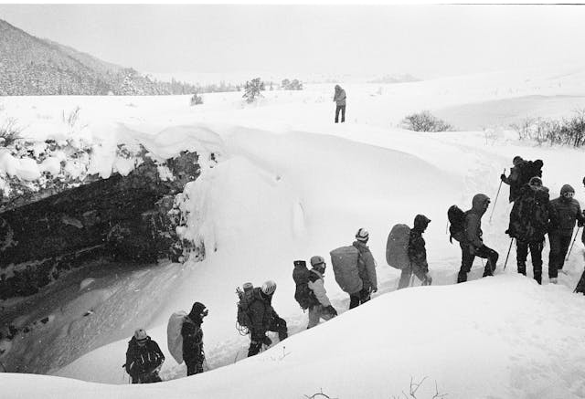

Strangest Weather Record Ever Recorded on Earth
By VinterEis
A Brief Introduction
When we think about extreme weather, we often picture places battered by storms, blizzard, or scorched by heatwaves. But some of the most bizarre and record-breaking weather events have happened in unique places that few people have even heard of. Here are several strange and fascinating weather records that have ever happened in human history.
Largest Hailstone Ever
The world record for the largest hailstone was set on July 23, 2010, in the small town of Vivian, South Dakota (USA). The stone measured an astonishing 20 cm (8 inches) in diameter, had a circumference of 47 cm (18.5 inches), and weighed nearly 0.9 kilograms (2 pounds). To put that in perspective, it was almost the size of a volleyball falling from the sky. If it had struck a person directly, it could have been deadly.
Hail forms inside strong thunderstorms, especially in supercells with powerful updrafts. Normally, hailstones circulate inside the storm cloud, growing as layers of water freeze around them, until they are heavy enough to fall. In the case of the Vivian hailstone, the storm’s updrafts were so intense that the stone was carried upward repeatedly, gathering more and more ice before gravity finally pulled it down. The combination of extreme moisture and unusually strong storm currents created the perfect conditions for this record-breaking monster of ice.
The Most Extreme Blizzard
The Iran Blizzard of February 1972 remains the deadliest snowstorm in recorded history, wiping out entire villages and leaving nearly 4,000 people dead. Snow piled as high as 26 feet (8 meters) in some areas, completely burying homes, farmland, and infrastructure. For almost a week, central and northwestern Iran were paralyzed, with no electricity, blocked roads, and no way for rescuers to reach the most affected regions. Some villages were so completely covered that when the snow melted, no trace of life was left. The sheer scale and death toll make this blizzard the most extreme in human history.
The disaster was caused by a rare clash of weather systems. A prolonged drought in Iran had left the land dry and vulnerable, then a series of strong winter storms swept in from the Caspian Sea and Siberia, colliding with moist Mediterranean air. This combination created unusually heavy and persistent snowfall. Cold Arctic air trapped over the Zagros Mountains allowed the snow to pile up for days without melting. With no modern forecasting systems in place at the time, villages were caught unprepared, and the storm’s duration and intensity turned it into an unprecedented catastrophe.
Driest Place Outside a Desert: McMurdo Dry Valleys, Antarctica
Despite being surrounded by ice and snow, the McMurdo Dry Valleys in Antarctica haven’t seen significant rainfall for almost two million years. Unlike the rest of the icy continent, these valleys are almost completely free of snow and ice, making them the largest ice-free region in Antarctica. he reason is a combination of geography and weather: the Transantarctic Mountains block moist air from the nearby ice sheet, while powerful katabatic winds—cold, dense air rushing downhill at speeds that can top 200 mph—quickly evaporate any snow that tries to settle. As a result, some parts of the Dry Valleys haven’t seen rainfall in millions of years, with annual precipitation averaging less than 100 mm.
Despite being one of the driest and harshest environments on Earth, life still manages to hold on. Tiny microbes live inside rocks or beneath glaciers, surviving on chemical reactions rather than sunlight. This makes the Dry Valleys not only a scientific wonder but also a natural laboratory for studying how life might survive on planets like Mars. With their alien-like landscapes and extreme climate, the McMurdo Dry Valleys stand as a reminder that Earth still has places as otherworldly as anything in space.
The Heaviest Snowfall Ever Recorded
The heaviest snowfall ever measured in a single day happened in Capracotta, Italy, on March 5, 2015. In just 24 hours, the small mountain town received an incredible 100.8 inches (2.56 meters / 8.4 feet) of snow. That’s enough to bury cars and houses in less than a day, making it one of the most intense snowfalls ever recorded.
Capracotta sits at an elevation of about 1,400 meters (4,600 feet) in the Apennine Mountains, a location that makes it particularly vulnerable to heavy winter storms. Moist air from the Mediterranean Sea collided with cold mountain air, creating the perfect conditions for an explosive snowstorm.
For residents, the event was both breathtaking and paralyzing. Entire streets and houses were buried, cars disappeared under towering drifts, and daily life came to a sudden standstill. Emergency crews worked around the clock to clear roads and assist stranded residents, while the storm itself became a global news story.
Although the snow eventually melted, the Capracotta storm remains legendary — not just for its sheer depth, but for how quickly it fell. To this day, it stands as a reminder of how dramatically weather can transform a community overnight.
The Most Extreme Temperature Change: Loma, Montana, USA
When you think of wild weather swings, you probably imagine needing a jacket in the morning and a T-shirt by afternoon. But nothing comes close to what happened in the tiny town of Loma, Montana back in January 1972. On the night of January 14, temperatures bottomed out at a bone-chilling –54 °F (–47.7 °C). By the next day, January 15, the thermometer had rocketed all the way up to 49 °F (9.4 °C). That’s a jaw-dropping 103 °F (57 °C) difference — the largest 24-hour temperature change ever recorded on Earth.
This strange event was caused by a sudden shift in local winds known as a Chinook wind. These warm, dry winds rush down the eastern slopes of the Rocky Mountains and can raise temperatures in a matter of minutes. On that day, bitterly cold Arctic air was sitting over the region when a powerful Chinook swept in, replacing the frigid air almost instantly. As a result, the temperature rocketed from –48°C (–54°F) to 9°C (49°F) within 24 hours, marking the largest single-day temperature change ever recorded.
Snowfall in the Hottest Place: Death Valley, USA
When most people think of Death Valley, they picture blazing sun, shimmering mirages, and record-breaking heat. After all, this desert valley in California holds the world’s hottest temperature ever recorded — a sweltering 134 °F (57 °C) in July 1913.
On January 29, 1922, residents at Greenland Ranch (today known as Furnace Creek) woke up to something they thought they’d never see — half an inch of snow on the valley floor. That’s the only recorded measurable snowfall in Death Valley’s history. It might sound like nature is playing a prank, but it also shows how extreme this landscape can be. With the right mix of cold air, moisture, and timing, even the hottest place on Earth can briefly wear a snowy coat.
Strongest Recorded Wind Gust on Land: Barrow Island, Australia
The strongest wind gust ever recorded on Earth took place in one of the most remote locations: Barrow Island, Australia. On April 10, 1996, during Tropical Cyclone Olivia, an automatic weather station on this isolated island measured a staggering 408 km/h (253 mph) gust. This incredible force was powerful enough to surpass any other officially recorded wind speed at the Earth’s surface, earning Barrow Island a place in meteorological history.
What makes this record especially remarkable is the conditions under which it occurred. Tropical Cyclone Olivia was a massive system with intense pressure differences, creating the perfect setup for extreme wind speeds. Barrow Island’s remote location in the Indian Ocean meant it was directly exposed to Olivia’s strongest winds, and the presence of reliable scientific instruments allowed the gust to be captured with precision. Without that station, this once-in-a-lifetime event might have gone unrecorded, reminding us how much of Earth’s most extreme weather happens in places far from human eyes.
Most Tornadoes in a Single Day
On 27th of April 2011, the U.S. saw 207 tornadoes in just a day, the tornadoes mostly covered Alabama, Mississippi, Tennessee, and Georgia. This is known as "Super Outbreak". To imagine the scale of this outbreak, consider that more tornadoes touched down in a single day than many countries witness in an entire decade. Some of the storms were so powerful that they carved paths over a mile wide, tearing through towns and forests alike, and remained on the ground for more than 80 miles. The strongest tornadoes generated winds exceeding 200 miles per hour (320 km/h), strong enough to level well-built homes, uproot massive trees, and toss vehicles through the air as if they were toys.
The record-breaking tornado outbreak was fueled by a rare and dangerous mix of weather conditions. A powerful cold front moved across the United States and clashed with warm, moist air from the Gulf of Mexico, creating enormous instability in the atmosphere. At the same time, strong jet stream winds high above the ground provided the perfect spin needed to trigger rotating thunderstorms, known as supercells. When these supercells formed, they unleashed dozens of tornadoes in rapid succession, making April 27, 2011, one of the most explosive storm days ever recorded.
The Sunniest Place on Earth
The sunniest place on Earth is Yuma, Arizona (USA), which holds the world record for sunshine. On average, Yuma enjoys about 4,015 hours of sunshine every year, meaning the sun is shining for roughly 91% of all daylight hours. Residents and visitors can expect 11 hours of sunshine per day, almost every day of the year. With such consistent sunshine, Yuma is not only a record-holder but also one of the best locations in the world for solar energy production.
Yuma’s sunshine dominance comes from its location and climate. It sits in the Sonoran Desert, where rainfall is extremely rare and cloud cover is minimal. Surrounded by mountains, the area experiences very dry air, which allows the sky to stay almost permanently clear. In addition, Yuma’s latitude places it in a region that receives strong, direct sunlight throughout the year. This combination of desert dryness, geography, and latitude creates a perfect recipe for endless sunny days.
World’s Wettest Inhabited Place: Mawsynram, India
Tucked away in the Khasi Hills of Meghalaya, Mawsynram holds the crown as the world’s wettest inhabited place. This small village sees an incredible 11,000–12,000 mm of rainfall every year — that’s nearly 40 feet of rain! Most of it comes during the summer monsoon (June to September), when moist winds sweep up from the Bay of Bengal and slam into the steep Khasi Hills. The mountains force the moisture-laden air upward, causing it to cool and release torrents of rain, sometimes more than a meter’s worth in a single month.
Ironically, even with all this rain, Mawsynram’s residents face water shortages once the monsoon ends. The region lacks proper water storage systems, so by winter, locals often queue at taps and ration what little water is left. Life here is shaped by the monsoon’s extremes — lush, green landscapes and thundering rains in one season, followed by unexpected dryness in another. It’s a striking reminder that even in the wettest place on Earth, water doesn’t always come easy.
Lowest Temperature in the Northern Hemisphere (Inhabited): Verkhoyansk & Oymyakon, Russia
In the heart of Siberia’s Sakha Republic, the towns of Oymyakon and Verkhoyansk have long competed for the title of the coldest inhabited place on Earth. Oymyakon is often credited with the record, plunging to a staggering –67.7 °C (–90 °F) in February 1933. Verkhoyansk isn’t far behind, having dipped to –67.8 °C (–90 °F) back in 1892, though that older reading is sometimes debated among scientists. What makes these towns so brutally cold is their geography: both sit in deep valleys surrounded by mountains, where frigid air sinks and becomes trapped. Add in the Siberian High—a powerful winter high-pressure system—and the region becomes a natural freezer, holding cold air in place for weeks on end.
But Siberia isn’t the only contender. In December 1991, an automatic station on the Greenland Ice Sheet recorded an astonishing –69.6 °C (–93.3 °F), which now stands as the official lowest temperature ever measured in the Northern Hemisphere. Still, because Greenland’s record came from a remote, uninhabited site, Oymyakon and Verkhoyansk remain the undisputed champions when it comes to places where people actually live. These frosty towns are living proof of how humans can adapt and endure in some of the harshest environments on the planet.
Most Lighting Strike in One Place
Lake Maracaibo, Venezuela, is struck by lightning about 260 nights a year (often lasting up to 10 hours per night), sometimes up to 28 lightning strikes per minute. This lake covering about 13,000 square km (5,000 sq mi), is a famous site for a natural wonder called“Relámpago del Catatumbo” (Catatumbo Lightning).
What makes it so much lighting is because its geography that's warm moist air from the Carribean Sea collides with cooler mountain air from Andes. This creates a perfect, recurring storm system where electric charges build up nightly.
Most Rain in One Minute
When we think of rain, it usually builds up gradually—drizzle, then showers, then maybe a downpour. But on July 4, 1956, the small town of Unionville, Maryland, USA, experienced something truly extraordinary: 31.2 millimeters (1.23 inches) of rain fell in just one minute. In perspective, the rain fill a typical coffee mug in sixty seconds and if such that continues for an hour, the total rainfall could exceed over 1.8 metres (more than some places get in an entire year).
What makes this record so fascinating is the sheer of impossibiity of preparation. Residents would have felt like the heavens had suddenly dumped a bucket of water straight onto them. This raining cats and dogs was likely caused by a highly localized thunderstorm cloud that releasing water in a sudden burst.
Heaviest Fog Ever Recorded

In 1952, London was covered by an extremely dense fog that having visibility under 100 metres and even some places covered by fog that under 20 metres (Category X fog) visibility. This is known as The Great Smog of London, the fog was so thick that even it even affected indoor areas, and people couldn't see their own headlights.
This catastrophe was caused by high levels of of pollution from the industrial era combined with cold weather. An Anticyclone trapped the smoke and fog that builds up toxic, dense, and deadly atmosphere. This catastrophic event last long for five days (from 5th December to 9th December) and caused thousands of deaths due to toxic pollutants from widespread coal burning. This catastrophic event prompted goverment to pass clean air act for four years which marked a turning point in history of environmentalism.
 Pinterest
Pinterest Youtube
Youtube{kind=link}